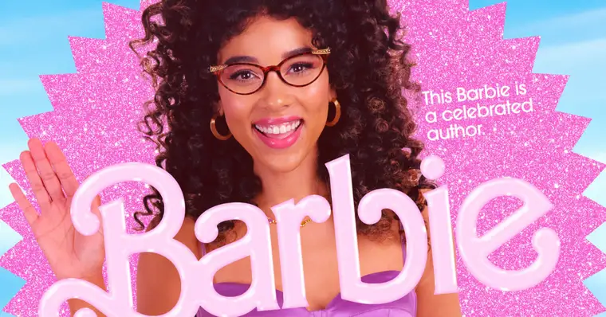

Barbie Estereotipada
Margot Robbie É a protagonista de Barbie e, por
isso, vive a primeira versão da boneca da Mattel, a Barbie
Estereotipada. Sua personagem não possui diplomas em física ou
literatura, nem um lugar no senado. Porém, tem todas as
características básicas do primeiro modelo da Barbie: loira e
perfeita. Só que, assim como outros trabalhos de Margot, a beleza
não é tudo e, por isso, algo parece estar desmoronando dentro de
sua personagem.
1/12
Ken
Ryan Gosling
Depois de se envolver em várias cenas de ação com Agente Oculto,
Blade Runner 2049 e, até mesmo, Drive, Ryan Gosling retorna para
as comédias. Em Barbie, o ator interpreta o principal Ken que, por
esse mesmo motivo, não possui função alguma na Barbielândia. Assim
como a personagem de Margot Robbie, Gosling precisa enfrentar
todos os medos ao redor de uma grande questão: “Ken ele é?”
2/12
Gloria
America Ferrera Além dos personagens de Margot
Robbie e Ryan Gosling, Gloria, interpretada por America Ferrera, é
um dos elementos mais importantes na narrativa de Barbie. Gloria
não é apenas uma funcionária da Mattel, como também é a primeira a
estender a mão para a Barbie em sua jornada de autoconhecimento.
Algo que America está cansada de enfrentar nos cinemas. Algumas de
suas principais obras incluem a série Ugly Betty, em que foi
protagonista e Quatro Amigas e um Jeans Viajante, ambas sobre
amadurecimento e feminilidade.
3/12
Sasha
Ariana Greenblatt Conhecida por ser uma ”criança
em apuros” em filmes como 65 - Ameaça Pré-História, Awake e até a
pequena Gamora em Vingadores: Guerra Infinita; Ariana Greenblatt
mostra em Barbie que já está bem crescida para brincar com
bonecas. Ariana Greenblatt interpreta Sasha, um dos principais
motivos do porquê a Barbie de Margot Robbie viaja até o mundo
real. Sua presença é um contraponto divertido entre a concepção da
boneca e como a modernidade tem lidado com a sua imagem.
4/12
CEO da Mattel

Will Ferrell Will Ferrell tem um dos papéis mais
icônicos de Barbie. No longa, ele representa o patriarcado sob a
forma do CEO da Mattel. Sempre em busca do lucro e a ordem na sua
empresa, seu personagem está disposto a fazer de tudo para
permanecer no controle. Ferrel traz o mesmo tom cômico e estranho
de outros de seus filmes, como O âncora: A Lenda de Ron Burgundy e
Uma Aventura LEGO.
5/12
Barbie Presidente
Issa RaePara colocar todas as Barbies e Kens nos
eixos, é necessário uma figura de autoridade. Porém, quem disse
que líderes não podem ser divertidos? Issa Rae vive a Barbie
Presidente, uma boneca que lidera o senado com um sorriso no rosto
e muitas piadas. Algo que tem sido o foco da carreira de Rae. Sua
principal performance e trabalho criativo ficou para Insecure,
série que estrelou e roteirizou. Atualmente, a atriz tem estado na
produção de séries como Maldito Rap, enquanto nos cinemas deu voz
a Mulher-Aranha em Homem-Aranha: Através do Aranhaverso. Mas, para
conhecer mais do trabalho da atriz, Awkward Black Girl é o local
certo, além de filmes como A Chefinha e Um Crime para Dois.
6/12
Mais um Ken
Simu LiuMesmo com a Barbielândia sendo um paraíso
para as bonecas e bonecos da Mattel, isso não significa que os
personagens não tenham rivalidades e conflitos. Para o personagem
de Gosling, seu rival é o Ken de Simu Liu, um Ken sempre com uma
acrobacia na manga. Algo que não é uma novidade na carreira do
ator que vive o herói Shang-Chi no Universo Cinematográfico da
Marvel. Outros destaques de sua carreira incluem Amor(es)
Verdadeiro e Substitutos.
7/12
Barbie Escritora

Alexandra ShippEm Barbie, Alexandra Shipp vive
mais uma encarnação da Barbie, dessa vez uma escritora. Assim como
as demais, Shipp é quem decide e controla os próximos movimentos
políticos da Barbielândia. Já no mundo real, a atriz viveu tantas
histórias quanto sua personagem é capaz de imaginar. Desde a
Tempestade dos X-Men até produções como Com Amor, Simon, Tick,
Tick… Boom! e Shaft (2019).
8/12
Ele é Ken também
Kingsley Ben-AdirKingsley Ben-Adir está
incorporando sua persona vilanesca em Invasão Secreta ao viver
Gravik. Mas, nos cinemas, promete apresentar uma performance bem
mais “boba”. Em Barbie, ele é um Ken, mas diferente dos demais,
que servem como um contraponto para as Barbies, o personagem de
Ben-Adir é um companheiro fiel do Ken de Gosling. É ele que apoia
e tenta seguir o jeito “complicado e perfeitinho” de seu amigo.
9/12
Barbie Estranha
Kate McKinnonKate McKinnon vive uma “estranha”
personagem em Barbie. Aqui, ela personifica a Barbie com que as
garotas brincaram demais. Com o rosto riscado e sempre fazendo
espacate, ela é chamada de “Barbie Estranha” pelas demais bonecas
da Barbielândia. Os amantes do gênero de comédia devem lembrar de
McKinnon por A Noite é Delas, Caça-Fantasmas (2016) e A Bolha.
10/12
Barbie Doutora
Hari NefAtriz, modelo e escritora na vida real,
Hari Nef encarna no papel de Doutora em Barbie. Ela é uma das
personagens da Barbilândia com mais personalidade e se destaca por
ser uma mulher trans entrando no papel da boneca. A carreira de
atriz de Hari inclui desde participações em séries como And Just
Like That…, Transparent, Maravilhosa Sra. Maisol, The Idol até
filmes como Ajustando um Amor e Mapplethorpe.
11/12
Ah! Esse é o Allan
Michael CeraMichael Cera tem estado longe das
grandes produções cinematográficas há algum tempo, mas retorna com
estilo ao interpretar Allan, o melhor amigo do Ken. Inicialmente,
seu personagem não parece ter função alguma além de ser uma adição
cômica, mas aos poucos vemos que Cera veio conquistar o público
com seu jeitinho estranho. O ator ficou mais conhecido por viver o
protagonista de Scott Pilgrim Contra o Mundo, mas também marcou
filmes como Juno, Nick & Norah: Uma Noite de Amor e Música e É o
Fim. Mas, recentemente, seu foco tem sido as séries e minisséries,
como em Life & Beth, Black Mirror e Command Z.
12/12